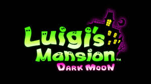
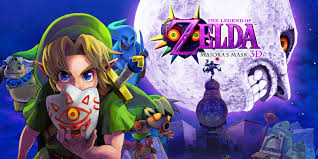
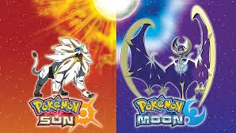
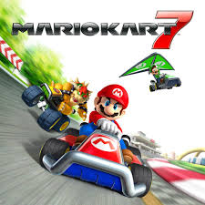

Top 10 Highest-Grossing and Most Popular Nintendo 3DS Games
11/10/2024Introduction
Following the massive success of the Nintendo DS, the 3DS had significant expectations to meet when it launched in 2011. It delivered with innovative 3D technology that didn’t require glasses, improved hardware, and a robust library of games spanning various genres. Over its lifetime, the Nintendo 3DS became one of the most successful handheld systems, beloved for its mix of groundbreaking new titles and nostalgic remakes. Here’s an in-depth look at the top 10 highest-grossing and most popular Nintendo 3DS games that defined its legacy.
10. Luigi's Mansion: Dark Moon
Sales: 6.44 million copies Luigi's Mansion: Dark Moon built on the charm of the original GameCube classic by introducing multiple mansions, each with its own theme and puzzles to solve. Luigi’s personality shone through as he nervously yet determinedly tackled ghosts with his trusty Poltergust 5000. The game’s clever use of the 3DS’s stereoscopic 3D added depth to its spooky environments, making ghost hunting more immersive. Its mix of humor, light horror, and engaging gameplay made Luigi’s Mansion: Dark Moon a delightful addition to the 3DS library, proving that Luigi could hold his own as a lead character.
9. The Legend of Zelda: Majora's Mask 3D
Sales: 3.43 million copies Majora's Mask 3D brought the series' darkest, most complex entry to the 3DS, complete with graphical updates and gameplay refinements. The game’s time-based mechanics and richly layered story captivated players, offering a unique experience unlike any other Zelda title. Improved controls, such as the addition of the Bomber’s Notebook to track tasks, made this version more accessible while preserving the original’s challenging nature. Majora’s Mask 3D’s haunting atmosphere and intricate gameplay earned it a devoted following, solidifying its reputation as one of the most distinctive entries in the franchise.
8. The Legend of Zelda: Ocarina of Time 3D
Sales: 6.42 million copies The Legend of Zelda: Ocarina of Time 3D reintroduced one of the most celebrated games in history to a new generation. Enhanced graphics brought the world of Hyrule to life, while improved controls made navigation and combat smoother than ever. The stereoscopic 3D feature added depth to the game’s iconic locations, like Kokiri Forest and Hyrule Castle. Beyond the visual upgrades, the remake included subtle quality-of-life changes, such as a more intuitive inventory system, that made the experience even more enjoyable. For both fans of the original and newcomers, Ocarina of Time 3D was a testament to the enduring magic of Zelda.
7. Super Smash Bros. for Nintendo 3DS
Sales: 9.64 million copies Super Smash Bros. for Nintendo 3DS marked the first time the beloved fighting series was playable on a handheld console. Despite the hardware limitations, the game delivered a near-complete Smash experience, featuring a massive roster of characters, diverse stages, and an array of modes to keep players engaged. Online multiplayer allowed fans to test their skills globally, while Smash Run, a 3DS-exclusive mode, added a unique spin to the gameplay. The game’s responsive controls and faithful adaptation of the series’ core mechanics proved that handheld gaming could still deliver fast-paced, competitive experiences. It became a go-to title for 3DS players looking for action on the go.
6. Animal Crossing: New Leaf
Sales: 15.65 million copies Animal Crossing: New Leaf elevated the cozy life-simulation genre by giving players the mayoral responsibilities of their town. This new role allowed unprecedented customization and control over the town’s development, from designing public works projects to managing ordinances. The game’s charming characters, seasonal events, and endless opportunities for creativity made it a long-term favorite. Players could also visit other towns via online multiplayer, fostering a sense of community among fans. New Leaf’s relaxing yet addictive gameplay loop made it a standout experience on the 3DS, becoming a cornerstone of Nintendo’s library for players seeking a more leisurely gaming experience.
5. Super Mario 3D Land
Sales: 12.87 million copies Super Mario 3D Land bridged the gap between the series’ classic 2D platforming roots and modern 3D adventures. Designed specifically for the 3DS, the game masterfully utilized stereoscopic 3D to create intricate levels that often required players to judge depth and distance to navigate successfully. The creative level design offered a mix of accessible gameplay for newcomers and challenging moments for seasoned players. Its inclusion of power-ups like the Tanooki Suit brought nostalgia while adding fresh twists to Mario’s platforming mechanics. Super Mario 3D Land’s polished presentation and innovative use of 3D visuals made it a standout title that showcased the console’s potential.
4. Pokémon Omega Ruby and Alpha Sapphire
Sales: 14.53 million copies Pokémon Omega Ruby and Alpha Sapphire were much more than simple remakes—they were love letters to fans of the original Ruby and Sapphire games. The remastered Hoenn region came alive with gorgeous 3D graphics and enhancements that brought the adventure into the modern era. New features like soaring on Latios or Latias allowed players to explore the world in entirely new ways, while the Delta Episode added a fresh post-game narrative that deepened the lore. Mega Evolutions and updated mechanics ensured the games felt contemporary while still honoring their roots. These remakes balanced nostalgia and innovation perfectly, earning a spot as some of the 3DS’s best RPGs.
3. Pokémon Sun and Moon
Sales: 16.29 million copies Breaking away from tradition, Pokémon Sun and Moon reshaped the classic Pokémon formula with their focus on narrative and new gameplay features. Instead of the familiar gym system, players undertook the Island Challenge, a series of unique trials in the lush, tropical Alola region. Alolan forms of classic Pokémon reimagined fan favorites, while the introduction of Z-Moves added a dramatic flair to battles. Beyond the gameplay, Sun and Moon’s heartfelt story and memorable characters, including the mischievous Team Skull and enigmatic Lusamine, resonated with players. The games showcased the 3DS's capabilities with vibrant visuals and solidified the system as a hub for RPG enthusiasts.
2. Pokémon X and Y
Sales: 16.62 million copies When Pokémon X and Y debuted, they revolutionized the franchise by fully embracing 3D visuals for the first time. Pokémon battles came alive with beautifully rendered models, animations, and detailed environments that added new life to a beloved series. The games introduced Mega Evolutions, a dynamic new mechanic that allowed certain Pokémon to transform mid-battle, providing deeper strategic possibilities. Customizable trainer avatars also gave players more ways to personalize their in-game experience, making them feel more connected to their journey. With a reimagined Kalos region inspired by France, Pokémon X and Y expanded the series’ appeal while setting a high benchmark for future Pokémon games..
1. Mario Kart 7
Sales: 18.98 million copies Mario Kart 7 stands out as a shining example of how Nintendo continually reinvents its iconic franchises. With the addition of underwater racing and hang gliding, the game introduced exciting new mechanics that added depth and variety to its gameplay. The vibrant visuals made great use of the 3DS’s stereoscopic 3D, immersing players in its chaotic yet thrilling races. Online multiplayer was a major draw, allowing fans worldwide to compete with friends or strangers in real-time, showcasing their skills on tracks old and new. Mario Kart 7's accessibility and replay value made it a quintessential 3DS title that appealed to players of all ages, cementing its place as the console’s best-selling game.
Conclusion
The Nintendo 3DS achieved legendary status thanks to its diverse library of games, with titles that balanced innovation and nostalgia. From multiplayer juggernauts like Mario Kart 7 to single-player masterpieces like Ocarina of Time 3D, the console appealed to a broad range of gamers. Whether through groundbreaking mechanics, immersive storytelling, or charming simulations, these top 10 titles helped define the 3DS’s enduring legacy, securing its place as one of the most beloved handheld systems of all time.